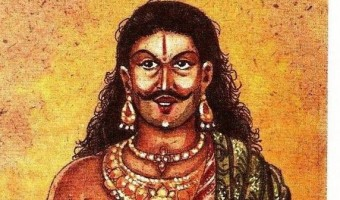

Cultural Education Project - 2nd Semester AIE
Vikarna
 In the Hindu epic Mahabharata, Vikarna was third Kaurava, son of Dhritarashtra and Gandhari and a brother to the crown prince Duryodhana.
Vikarna is universally referred to as the third-most reputable of Kauravas. Usually, he is also indicated as the third-oldest son, but in other sources, the "third-strongest" reputation remained and it is implied that Vikarna is
just one of Gandhari's 100 children (after Duryodhana and Dussasana). Vikarna was the only Kaurava who questioned the humiliation of Draupadi, the wife of his cousin Pandavas after they lost her in a game of dice to Duryodhana.
When the great King Yudhishtir’s quest to win at the dice game took over the best of him, he pawned his own wife. Draupadi was dragged forcefully and mercilessly to the court, before the noblest of men. These warriors, possessing
complete ability to bring the savage scene to a halt, preferred being mute spectators when the drunk-with-power Duryodhana ordered the commencement of the shameful act- unclothing of Draupadi. Everyone stayed mum. Well, everyone
except Vikarna. Vikarna made his voice heard against the whole idea of the dice game. And when began the mistreatment of his sister-in-law, he became more anxious to stop the whole deal for once and all. He echoed Draupadi’s questions,
which she had already raised before the Kuru leaders regarding the celebration of shame that centred around her. At this, Karna was enraged and he taunted Vikarna for his outburst, to which Vikarna replied, “Sister-in-law’s insult
is an affront to the entire Kuru clan. If her questions are not answered, our line is doomed.” This was clearly not taken well by Duryodhana who then asked Vikarna to quit voicing his opinions. Nothing helped. Even the leaders
who were considered the wisest of heads did nothing to stop the evil and save the victim. However, Vikarna emerged as the one who wouldn’t shut and see the wrong brewing before his eyes. In a world outside Mahabharata, when a girl
is humiliated and harassed before a mute mob, the person who dares to pull her to safety is harassed too.
Vikarna’s heroic act is documented in the book ‘Vikarna’ which was released in March of this year. Authored
by journalist Ch. Srinivasa Rao, the speakers at the book launch were quoted saying, “Vikarna, one of the 100 Kaurava brothers in the epic Mahabharatam, is the right role model for youth. He is worthy of emulation in the present
context of rising atrocities against women,” Despite harbouring apprehensions, he fought the Kurukshetra battle for his brother Duryodhana.
On the fourteenth day of the war, Arjuna in progress with implementing his vow of killing Jayadratha before sunset was navigating the chakravyuh of Drona. In a counter action, Kauravas had formed a defence to keep Jayadratha safe
from the upcoming danger. Bhima, in order to assist Arjuna, pierced fiercely through the defence. At this, Duryodhana gave Vikarna the responsibility to check on Bhima. Bhima, although had vowed to kill all the 100 Kauravas, didn’t
want to fight Vikarna and expressed his desire before him. Bhima knew Vikarna as the man of dharma, and hence his gesture. To this, Vikarna replied to Bhima that despite knowing that Kauravas fate has defeat written over it since
Lord Krishna was on the Pandavas side, he couldn’t defy the orders of his brother. Bhima reminded him of the dice game where Vikarna stood a hero alone, to which Vikarna replied: “That was my duty then, and this is my duty now.
Fight me, o son of Vayu!” Following the dialogue, Bhima killed Vikarna in a mace fight, and later lamented, “Alas, O Vikarna, you were just and knew what was dharma! You fought in loyal obedience to the call of duty. Indeed this
battle is a curse upon us wherein men like you…have had to be slaughtered.” Third in stature to Duryodhana, he was one of the best warriors Kauravas had. In fact, it is believed he was the only thoroughly skilled one. However,
his skills went unnoticed because of the other twisted personalities from the Kaurava clan. There was one thing common between Vikarna of Mahabharata and Kumbhkarna of Ramayana. They both followed their brothers directions despite
bearing doubts.